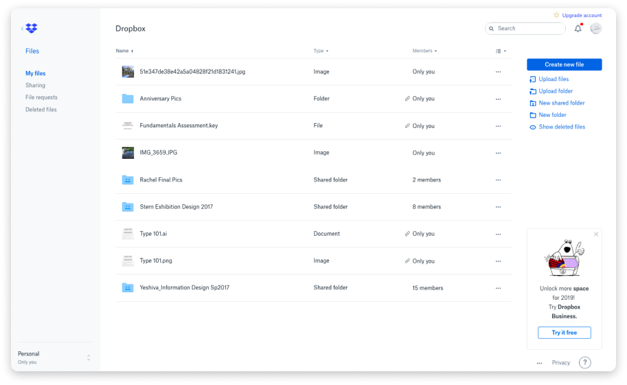
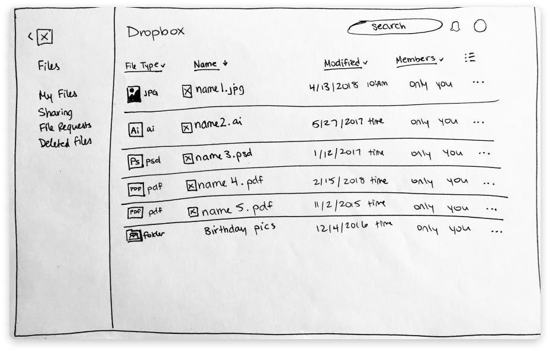
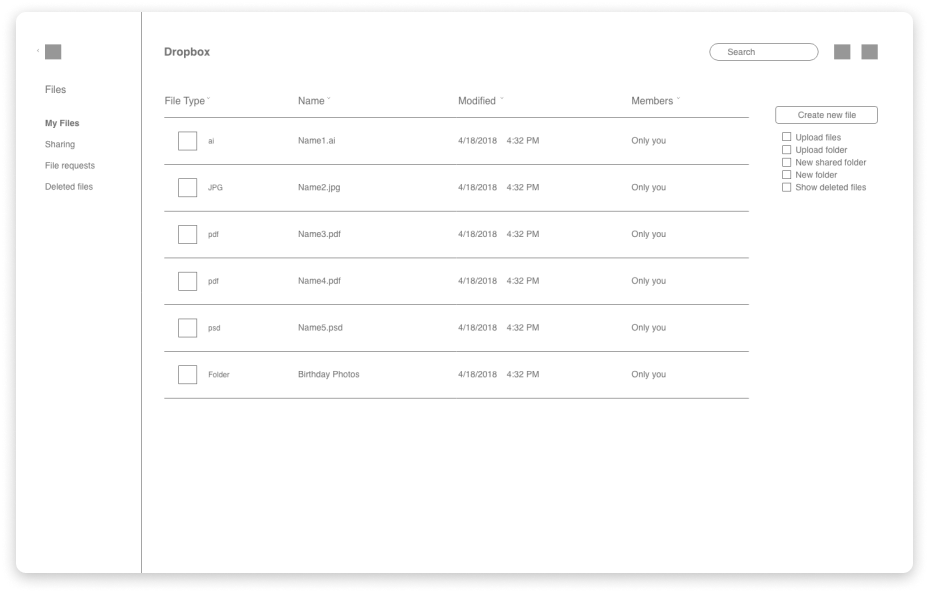
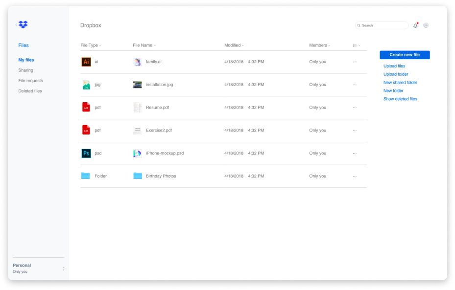
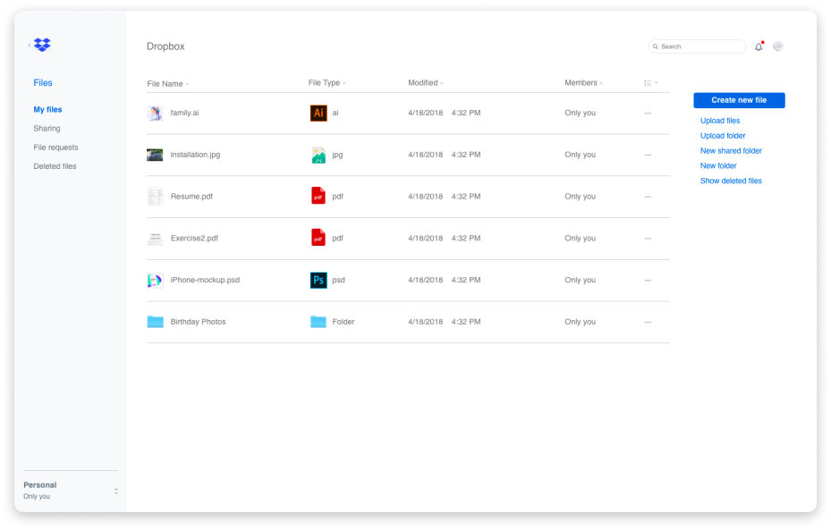

Roles
- UX Design
- UI Design
Deliverables
- Sketches
- Wireframes
- High Fidelity Mockups
Tools
- Adobe XD
Problem
In Dropbox’s current display, it is difficult to identify which types of files are on a user’s dashboard. There are multiple drop-down menu options which enable the user to select which information they want to see, but the file types are still not explicit enough for easy navigation and selection.
Solution
I increased the visibility of different types of files by creating a designated “file-type” column on the dashboard which includes both the name and correlating icon of that file type.
Phase 1: Discovery
I started off the challenge by examining what Dropbox’s current dashboard looks like. Here is a screenshot of my user dashboard:
Current Dropbox dashboard
Dropbox dashboard with drop-down menus displayed
As evident above, the user is able to select which files they want to see and in which order by using drop-down menus that correlate with each column. However, the abundance of options provided may make the selection process more confusing for some users while still not providing easy access to the types of files present.
Phase 2: Sketching
I brainstormed ways to increase file-type visibility for a user’s dashboard. Here is the final version of my sketch:
Sketch of proposed column layout
I kept most of the features consistent with the original design, but I added a new “File Type” column to the display. This column features both the file type icon and the extension so that someone can easily identify the file type just by looking at it.
Phase 3: Wireframing
I continued the process by turning my sketch into a wireframe.
Phase 4: High Fidelity Mockups
I added some of Dropbox’s branding and other icons to create high-fidelity mockups. In the two final mockups below I played around with the column order: the first features the file type column first with the file name column second, and the second option reverses the order.
Mockup option 1: file type first
Mockup option 2: file name first
Conclusion
I solved the initial problem of poor file type visibility on the Dropbox dashboard by more obviously displaying the file type name and icon. Even though this was a short project I learned a few key lessons: how to prioritize tasks in a time-bound project, which things to spend time on and which to skip, and when the time is up to "put the pencil down" and stop working.
If I had more time, I would:
1) Conduct user research and testing to figure out what people notice first on the Dropbox dashboard, which menu options they use most, and if my design effectively increases file type visibility.
2) Create additional dashboard mockups to explore and then test different types of file type visibility – for example, I’d create entire sections on the dashboard that correlate to file type to see if that method would be more effective than the one I put into play.